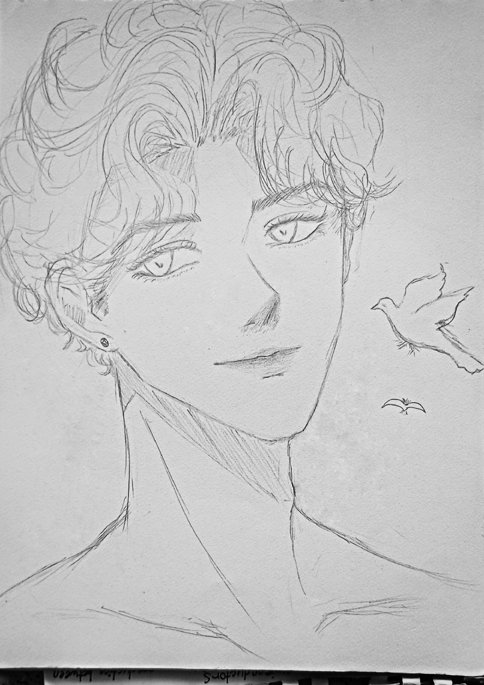
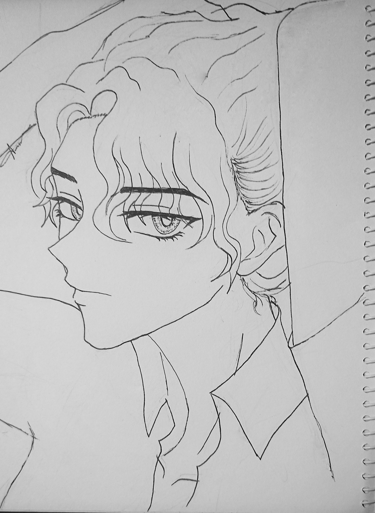

Characters



Synopsis:
Once there was a realm where nature flourishes, a group of once pure nymphs finds themselves cast out from their sacred home after defying the will of an ancient
god. Having stripped from their ethereal beauty and powers, they are forced to enter the human world as they struggle to adapt and survive in a place filled with
technology and foreign human behavior. A fallen Cecil once a stunning nymph with the power to manipulate nature, now she struggles with her new human form. As she
finds herself in a bustling city, her encounters with a fellow group of outcasts who helped her understand this new world.
On the otherhand, the god of seasons who unknowningly walks among mortals and embodies a distinct four personalities each tied to the essesence of the four seasons,
struggles to settle the personas from to clashing with each other. Their worlds collide on a rain-soaked night when a violent storm sweeps through the city drawn
together by an unexplainable force, they find themselves in a hidden garden a remnant of nature as the storm rages. In this moment of weakness, two destinies
intertwine. Secrets begin to unravel, showing that their connection runs deeper than mere chance. Will they embrace the magic of their entwined fates, or will
the weight of their pasts tear them apart?
Synopsis:
In a world of Skyscrapers and Ruins, there are only two things you can be, an Elite living in wasteful wealth or a Dwellers living in excess poverty.
Sang is one of those dwellers, forgotten by the rich and shoved aside to live in an overcrowded city of ruins. But perhaps the dwellers aren't as
abandoned as they think, because suddenly there's a way out of the Ruins for those daring to apply.
Five of the richest figures in the entire elite world are holding a contest for the dwellers, offering a rare opportunity to gain entry into their elite society.
A desperate Sang has no choice but to submit an application despite the harsh rumors that surround it. Never once did she expect to catch the eye of the
five and be pulled into a world far more dangerous than the one she grew up in. Now, it's no longer about trying to survive the Ruins, with hunger and pain,
but trying to survive the Skyscrapers, with death, rebellion, and the most dangerous thing of all: love.
Synopsis:
A place where mountains reach the sky and magic flows in the rivers, there's a legend about an Enternal Jade...


First Playlist
- Love Story by Indila
- Lover by Taylor Swift
- Blank Space by Taylor Swift
- Fantasize by Ariana Grande
- Escapism by Raye
- Candy by Doja Cat
- Collide by Justine Skye
- Obsessed by Mariah creativety
Second Playlist
- Moth to a flame by Weeknd
- Pray for me by Weeknd
- Swim by Atlantic
- Under the influence by Chris Brown
- Heaven and Back by Atlantic
- Mind Games by Sickick
- Infinity by James young